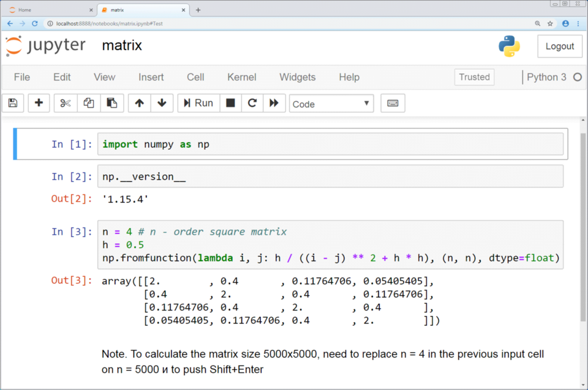

pip install numpy scipy matplotlib librosa jupyterlab jupyter lab # opens JupyterLab in your browser
M.Sc. Audiology · Technology in Audiology
Python fundamentals for audiological signal processing
A first-reference module for students and faculty. It teaches the Python you need to generate test signals, read recordings, measure levels, filter, analyse spectra and plot audiograms, using the same tools found in hearing research labs.
Pure tone, first 5 ms, fs = 44 100 Hz
01
What Python is, and why audiologists use it
Python is a general-purpose programming language. On its own it knows nothing about sound. Its value in audiology comes from a stack of open-source scientific libraries built on top of it: NumPy for numbers in arrays, SciPy for filters and signal tools, Matplotlib for plots, librosa for audio and speech features, and Jupyter for notebooks that mix code, results and explanation.
What it is
An interpreted language plus a scientific ecosystem that turns a sound recording into an array of numbers you can measure, transform and plot.
Why it is required
Clinical devices hide their processing. Python lets you open the box: verify a stimulus, reproduce a filter, check a calibration or analyse research data in a way others can repeat.
How it works
Audio is sampled into a vector. Every operation (gain, filtering, FFT, feature extraction) is arithmetic on that vector, done in fast compiled code inside NumPy and SciPy.
Where Python sits among audiology software
| Tool | Best at | Input / output | Limitation for this course |
|---|---|---|---|
| Audacity / Audition | Listening, editing, quick EQ and noise reduction | WAV, MP3 / edited audio | Processing is menu driven and hard to reproduce exactly |
| Praat | Pitch, formants, spectrograms of speech | WAV / measurements, TextGrids | Scripting language is specialised to phonetics |
| MATLAB | Numerical DSP, toolboxes, legacy research code | MAT, WAV / arrays, plots | Licensed; toolboxes cost extra |
| Python | Reproducible analysis, automation, machine learning | WAV, CSV, JSON / arrays, plots, reports | Needs setup; not a validated clinical device |
Learning outcomes
- Store audiological quantities (sampling rate, frequency, dB HL) in correctly typed variables.
- Build time vectors and signals with NumPy, and organise multi-channel or framed data as matrices.
- Write reusable functions for tone generation, RMS and dBFS measurement.
- Compute a spectrum, design a Butterworth band-pass and a 50 Hz notch filter with SciPy.
- Plot waveforms, spectra and a standard audiogram with Matplotlib.
- Load audio and extract spectrograms, MFCCs and fundamental frequency with librosa.
- Run, document and share the whole analysis as a Jupyter notebook.
02
Architecture and signal flow
Every analysis in this module follows one path. A sound exists as air pressure, a microphone and ADC turn it into integers, a file stores them, and Python reads them into a floating-point array. From that point on, each library handles one stage.
Components of the stack
| Component | Role | Typical call | Audiology example |
|---|---|---|---|
| Python interpreter | Runs your code line by line | python, a Jupyter kernel | Executes the analysis script |
| NumPy | N-dimensional arrays and fast maths | np.sin, np.fft.rfft | Generate a 1 kHz tone, compute RMS |
| SciPy | Signal processing, statistics, file I/O | signal.butter, wavfile.read | Band-limit speech to 300 to 3400 Hz |
| Matplotlib | 2-D plotting | plt.plot, ax.set_xscale | Draw a waveform or an audiogram |
| librosa | Audio loading and music/speech features | librosa.load, feature.mfcc | Spectrogram and f0 of a speech sample |
| Jupyter | Interactive notebook environment | JupyterLab, VS Code, Google Colab | Lab record with code, plots and notes |
Key ideaEvery stage after loading works on the same NumPy array. If you understand arrays, you understand how all the other libraries talk to each other.
03
Setup and the first two lines
Install once, on a lab PC or a laptop. A clean way is the official Python installer from python.org or Miniconda, followed by one command in a terminal:
Almost every audio notebook starts with the same two lines. Here is what each part means.
import numpy as np import matplotlib.pyplot as plt print(np.pi, np.sqrt(2))
3.141592653589793 1.4142135623730951
-
import numpy as np
Loads the NumPy library into memory and gives it the short name
np. After this line, every NumPy tool is reached asnp.something, for examplenp.sin,np.meanornp.fft.rfft.Why a short name? You will type it hundreds of times.
npis the universal convention, so code you find in papers, textbooks and forums will read the same as yours.import Python keyword: load a modulenumpy the package nameas np alias used in your code -
import matplotlib.pyplot as plt
Matplotlib is a large package. The dot reaches inside it to the
pyplotsubmodule, the part that creates figures and draws lines, and names itplt. You then callplt.plot,plt.xlabel,plt.show.You import only
pyplotbecause that is the interface for making plots; the rest of Matplotlib works behind it.matplotlib package.pyplot submoduleas plt alias -
print(np.pi, np.sqrt(2))
A quick check that the import worked.
np.piis a constant stored inside NumPy;np.sqrtis a function. If NumPy were missing you would seeModuleNotFoundError: No module named 'numpy'instead.
Common errorWriting
np.sin(...) before running the import cell gives NameError: name 'np' is not defined. In Jupyter, always run the import cell first after opening or restarting a notebook.04
Variables
What
A variable is a name attached to a value. fs = 44100 stores the number 44100 under the name fs.
Why
Signal parameters (sampling rate, frequency, level) appear in many formulas. Naming them once avoids typing errors and makes code read like a test protocol.
How
Python infers the type from the value: whole numbers are int, decimals float, text str, yes/no bool.
fs = 44100 # sampling rate in Hz (samples per second) duration = 0.5 # stimulus duration in seconds freq = 1000 # test frequency in Hz level_dbhl = 40 # presentation level in dB HL ear = "right" # test ear masking_on = False # contralateral masking switched off n_samples = int(fs * duration) # how many samples the tone needs print(n_samples) print(type(fs), type(duration), type(ear), type(masking_on))
22050 <class 'int'> <class 'float'> <class 'str'> <class 'bool'>
Collections hold several values. A dictionary maps keys to values, which suits an audiogram: frequency in Hz as the key, threshold in dB HL as the value.
audiogram_right = {250: 20, 500: 25, 1000: 30, 2000: 45, 4000: 60, 8000: 65}
pta = (audiogram_right[500] + audiogram_right[1000] + audiogram_right[2000]) / 3
print(f"PTA (0.5, 1, 2 kHz): {pta:.1f} dB HL")
PTA (0.5, 1, 2 kHz): 33.3 dB HL
| Type | Example | Audiology use |
|---|---|---|
int | fs = 16000 | Sampling rate, sample counts, FFT size |
float | duration = 0.3 | Seconds, dB values, amplitudes |
str | ear = "left" | Labels, file names, patient codes |
bool | masking_on = True | Switches in a protocol |
list | [250, 500, 1000] | Ordered test frequencies |
dict | {1000: 30} | Frequency to threshold look-up |
Naming habitPut units in names when they matter:
dur_s, ramp_ms, level_dbhl. It prevents the classic milliseconds-versus-seconds bug.05
Vectors: a signal is a 1-D array
What
A vector is an ordered list of numbers stored as a NumPy array with one dimension. A mono recording is exactly this: one number per sample.
Why
NumPy applies an operation to every element at once (vectorisation). Scaling 22 050 samples is one expression, with no loop to write.
How
Build a time axis t = n / fs, then compute the signal from it: x = A sin(2πft).
t = np.arange(n_samples) / fs # 0, 1/fs, 2/fs, ... seconds
x = 0.5 * np.sin(2 * np.pi * freq * t) # 1 kHz tone, peak amplitude 0.5
print(t.shape, x.shape, x.dtype)
print(t[:4]) # first four time points
rms = np.sqrt(np.mean(x**2)) # root-mean-square
print(f"Peak = {np.max(np.abs(x)):.4f}")
print(f"RMS = {rms:.4f}")
print(f"Level = {20*np.log10(rms):.2f} dBFS")
plt.plot(t[:221] * 1000, x[:221]) # first 5 ms
plt.xlabel("Time (ms)"); plt.ylabel("Amplitude")
plt.show()
(22050,) (22050,) float64 [0.00000000e+00 2.26757370e-05 4.53514739e-05 6.80272109e-05] Peak = 0.5000 RMS = 0.3536 Level = -9.03 dBFS
Reading the output
(22050,)is the shape: one dimension with 22 050 elements. The trailing comma marks a 1-D shape.- Time steps are 1/44 100 s = 22.7 µs apart, the sampling period.
- RMS of a sine is peak / √2, so 0.5 / 1.414 = 0.3536.
dBFSis decibels relative to digital full scale (1.0). It is not dB SPL and not dB HL. Converting needs a calibration measurement.
| Operation | Code | Meaning for a signal |
|---|---|---|
| Gain | x * 2 | +6.02 dB |
| Mix | x + noise | Sample-by-sample sum (same length needed) |
| Slice | x[:441] | First 10 ms at 44.1 kHz |
| Reverse | x[::-1] | Time reversal |
| Clip | np.clip(x, -1, 1) | Simulates hard peak clipping |
| Index of max | np.argmax(np.abs(x)) | Sample where the peak occurs |
06
Matrices: 2-D arrays for channels, frames and results
What
A matrix is a 2-D array with rows and columns. Its shape is written (rows, columns).
Why
Stereo recordings, short-time frames, spectrograms and audiogram tables for both ears are all naturally two-dimensional.
How
Stack vectors with np.column_stack or np.stack. Reduce along a direction with axis=0 (down rows) or axis=1 (across columns).
stereo = np.column_stack([x, 0.25 * x]) # left full level, right -12 dB print(stereo.shape) print(stereo[:3].round(4)) frame_len, hop = 1024, 512 # 23.2 ms frames, 50 % overlap n_frames = 1 + (len(x) - frame_len) // hop frames = np.stack([x[i*hop : i*hop + frame_len] for i in range(n_frames)]) print(frames.shape)
(22050, 2) [[0. 0. ] [0.071 0.0177] [0.1406 0.0351]] (42, 1024)
Framing is the basis of every short-time analysis you will meet: spectrograms, LPC, MFCCs and hearing-aid processing all work on overlapping blocks of about 10 to 30 ms.
freqs = np.array([250, 500, 1000, 2000, 4000, 8000])
thr = np.array([[20, 25, 30, 45, 60, 65], # row 0: right ear, dB HL
[15, 20, 30, 50, 75, 70]]) # row 1: left ear, dB HL
print(thr.shape)
print(thr.mean(axis=1).round(1)) # mean threshold per ear
print(thr[:, 3]) # both ears at 2 kHz (column 3)
print(np.abs(thr[0] - thr[1])) # interaural difference per frequency
(2, 6) [40.8 43.3] [45 50] [ 5 5 0 5 15 5]
The 15 dB interaural difference at 4 kHz stands out immediately. Matrix operations make screening a whole clinic's data set for asymmetry a few lines of code.
07
Functions
What
A named, reusable block of code that takes inputs (arguments) and returns an output.
Why
You will generate tones and measure levels many times. A tested function removes copy-paste errors and documents the method.
How
Define with def, indent the body, end with return. Default values make arguments optional.
def make_tone(freq_hz, dur_s, fs=44100, amp=0.5, ramp_ms=10):
"""Pure tone with raised-cosine onset and offset ramps."""
t = np.arange(int(fs * dur_s)) / fs
tone = amp * np.sin(2 * np.pi * freq_hz * t)
n_ramp = int(fs * ramp_ms / 1000)
ramp = 0.5 * (1 - np.cos(np.pi * np.arange(n_ramp) / n_ramp))
tone[:n_ramp] *= ramp # fade in
tone[-n_ramp:] *= ramp[::-1] # fade out
return tone
def rms(sig):
return np.sqrt(np.mean(sig**2))
def dbfs(sig):
return 20 * np.log10(rms(sig))
tone = make_tone(2000, 0.3)
print(len(tone), f"{dbfs(tone):.2f} dBFS")
for f in [500, 1000, 4000]:
print(f, f"{dbfs(make_tone(f, 0.3, amp=0.1)):.2f}")
plt.plot(np.arange(len(tone)) / 44100 * 1000, tone)
plt.xlabel("Time (ms)"); plt.show()
13230 -9.22 dBFS 500 -23.20 1000 -23.20 4000 -23.20
Why the ramps?
Switching a tone on abruptly spreads energy across many frequencies and is heard as a click. That spectral splatter would stimulate regions other than the test frequency. A short raised-cosine rise and fall keeps the energy near the nominal frequency, the same reason audiometers and evoked-potential systems shape their stimuli. The ramps also explain why the level is -9.22 dBFS, slightly below the -9.03 dBFS of the unramped tone.
| Part | In make_tone | Purpose |
|---|---|---|
| Name | make_tone | Verb-first names describe the action |
| Required arguments | freq_hz, dur_s | Must be supplied every call |
| Default arguments | fs=44100, amp=0.5, ramp_ms=10 | Sensible values you can override |
| Docstring | """Pure tone ...""" | Shown by help(make_tone) |
| Return value | return tone | The array handed back to the caller |
08
NumPy: arrays, maths and the FFT
NumPy (Numerical Python) supplies the ndarray, a block of numbers of one type stored contiguously in memory. Operations run in compiled C, which is why a one-second, 44.1 kHz signal can be processed in microseconds from a few lines of Python.
| Task | NumPy call | Note |
|---|---|---|
| Evenly spaced samples | np.arange(n) / fs | Exact sample times |
| Fixed number of points | np.linspace(0, 1, 1000) | Includes end point by default |
| Silence | np.zeros(fs) | One second of zeros |
| White noise | np.random.default_rng(0).standard_normal(fs) | Seeded, so repeatable |
| Concatenate | np.concatenate([gap, tone, gap]) | Build a stimulus sequence |
| Decibels | 20 * np.log10(a / ref) | Amplitude ratio to dB |
| Spectrum | np.fft.rfft(x), np.fft.rfftfreq(n, 1/fs) | Real-input FFT and its frequency axis |
| Window | np.hanning(n) | Reduces spectral leakage |
Algorithm: the discrete Fourier transform
The FFT is a fast algorithm for the DFT, which re-expresses N time samples as N/2 + 1 frequency components for a real signal. Bin spacing (frequency resolution) is fs / N, so a longer analysis window gives finer resolution. Multiplying by a Hann window before the FFT tapers the edges of the segment and stops energy from leaking into neighbouring bins.
sig = make_tone(1000, 0.5, amp=0.5) + make_tone(3000, 0.5, amp=0.1)
N = len(sig)
X = np.fft.rfft(sig * np.hanning(N)) # windowed FFT
f = np.fft.rfftfreq(N, d=1/fs) # frequency of each bin (Hz)
mag = np.abs(X)
mag_db = 20 * np.log10(mag / mag.max() + 1e-12)
print(N, X.shape, f"{fs/N:.1f} Hz")
print(f"Peak at {f[np.argmax(mag)]:.1f} Hz")
i3 = np.argmin(np.abs(f - 3000))
print(f"3 kHz component: {mag_db[i3]:.1f} dB re peak")
plt.plot(f, mag_db); plt.xlim(0, 5000); plt.ylim(-100, 5)
plt.xlabel("Frequency (Hz)"); plt.ylabel("Magnitude (dB re peak)")
plt.show()
22050 (11026,) 2.0 Hz Peak at 1000.0 Hz 3 kHz component: -14.0 dB re peak
The 3 kHz tone had one fifth of the amplitude, and 20 log10(0.1 / 0.5) = -14.0 dB. The spectrum recovers the level difference exactly.
09
SciPy: filters and audio files
SciPy builds on NumPy. The module you will use most is scipy.signal (filter design, filtering, spectrograms, resampling). scipy.io.wavfile reads and writes WAV files.
FIR filters
Output is a weighted sum of past inputs only. Always stable, can have exactly linear phase, but need many coefficients. signal.firwin.
IIR filters
Output also feeds back past outputs. Sharp responses with few coefficients; phase is non-linear. signal.butter, signal.iirnotch.
Second-order sections
Use output="sos" for IIR filters above order 2. It splits the filter into stable biquads and avoids numerical errors.
from scipy import signal
sos = signal.butter(4, [300, 3400], btype="bandpass", fs=fs, output="sos")
print(sos.shape) # 4 biquad sections x 6 coefficients
w, h = signal.sosfreqz(sos, worN=[100, 300, 1000, 3400, 8000], fs=fs)
for fw, hw in zip(w, h):
print(int(round(fw)), f"{20*np.log10(abs(hw)):.1f} dB")
speech_band = signal.sosfiltfilt(sos, x) # zero-phase filtering
(4, 6) 100 -41.0 dB 300 -3.0 dB 1000 -0.0 dB 3400 -3.0 dB 8000 -35.8 dB
The cut-off frequencies sit exactly at -3 dB. 300 to 3400 Hz is the classic telephone bandwidth, useful for simulating what a patient hears in a tele-audiology call.
rng = np.random.default_rng(0)
tt = np.arange(fs) / fs # 1 s time axis
clean = make_tone(1000, 1.0, amp=0.3)
hum = 0.2 * np.sin(2 * np.pi * 50 * tt) # mains interference (India: 50 Hz)
noisy = clean + hum + 0.02 * rng.standard_normal(fs)
b, a = signal.iirnotch(50, Q=30, fs=fs) # notch centred on 50 Hz
cleaned = signal.filtfilt(b, a, noisy)
def level_at(sig, f0):
S = np.abs(np.fft.rfft(sig * np.hanning(len(sig))))
ff = np.fft.rfftfreq(len(sig), 1/fs)
return 20 * np.log10(S[np.argmin(np.abs(ff - f0))])
before, after = level_at(noisy, 50), level_at(cleaned, 50)
print(f"50 Hz hum before: {before:.1f} dB, after notch: {after:.1f} dB")
print(f"Reduction: {before - after:.1f} dB")
50 Hz hum before: 66.9 dB, after notch: 41.9 dB Reduction: 25.0 dB
Mains pickup is a daily problem in ABR and EEG recording. A narrow notch (high Q) removes it while leaving the 1 kHz component untouched. The plot shows the notch filter's magnitude response.
from scipy.io import wavfile
fs_file, data = wavfile.read("speech_sample.wav") # 16-bit PCM file
print(fs_file, data.dtype, data.shape)
x_speech = data.astype(np.float64) / 32768 # int16 to -1.0 ... +1.0
out = make_tone(1000, 1.0, amp=0.5)
wavfile.write("tone_1k.wav", 44100, (out * 32767).astype(np.int16))
16000 int16 (32000,) # example: a 2 s, 16 kHz mono recording
Scaling trap
wavfile.read returns raw integers. A 16-bit file gives values up to 32 767, so RMS and dBFS will be wrong by about 90 dB unless you divide by 32 768 first. librosa does this conversion for you.10
Matplotlib: waveforms, spectra and the audiogram
Matplotlib draws on a Figure (the whole image) that contains one or more Axes (a single plot with its own x and y axes). The quick style plt.plot(...) draws on the current axes. The explicit style fig, ax = plt.subplots() gives you named objects, which is clearer for anything with more than one panel.
| Need | Call |
|---|---|
| Line plot | ax.plot(t, x) |
| Log frequency axis | ax.set_xscale("log") |
| Reverse y axis (audiogram) | ax.set_ylim(120, -10) or ax.invert_yaxis() |
| Several panels | fig, axs = plt.subplots(2, 1, sharex=True) |
| Spectrogram image | ax.pcolormesh(t, f, S_db) or ax.specgram(x, Fs=fs) |
| Save for a report | fig.savefig("audiogram.png", dpi=300) |
freqs = [250, 500, 1000, 2000, 4000, 8000]
right = [20, 25, 30, 45, 60, 65]
left = [15, 20, 30, 50, 75, 70]
fig, ax = plt.subplots(figsize=(6, 5))
ax.plot(freqs, right, "o-", color="red", mfc="none", label="Right ear (AC)")
ax.plot(freqs, left, "x-", color="blue", label="Left ear (AC)")
ax.set_xscale("log")
ax.set_xticks(freqs)
ax.set_xticklabels(["250", "500", "1k", "2k", "4k", "8k"])
ax.set_ylim(120, -10) # better hearing at the top
ax.set_xlabel("Frequency (Hz)")
ax.set_ylabel("Hearing level (dB HL)")
ax.grid(True, alpha=0.4)
ax.legend(loc="lower left")
plt.show()
The code follows audiogram convention: red circles for the right ear, blue crosses for the left, octave frequencies on a logarithmic axis and the dB HL axis increasing downward.
11
librosa: loading audio and extracting speech features
librosa is an audio and music analysis library. It loads most audio formats straight into a float NumPy array and provides the time-frequency tools used in speech science: the short-time Fourier transform, mel spectrograms, MFCCs and pitch tracking.
import librosa
y, sr = librosa.load("speech_sample.wav", sr=16000, mono=True)
print(y.shape, sr, y.dtype, round(y.min(), 2), round(y.max(), 2))
(32000,) 16000 float32 -0.61 0.58 # example output for a 2 s file
Default resamplingIf you omit
sr, librosa resamples every file to 22 050 Hz and mixes it to mono. Pass sr=None to keep the file's own rate. Report the rate you used in any lab write-up.sr = 16000 y = librosa.chirp(fmin=200, fmax=4000, sr=sr, duration=2.0) # exponential sweep print(y.shape, sr) S = np.abs(librosa.stft(y, n_fft=512, hop_length=160)) # 32 ms window, 10 ms hop S_db = librosa.amplitude_to_db(S, ref=np.max) print(S.shape) # (frequency bins, frames) import librosa.display librosa.display.specshow(S_db, sr=sr, hop_length=160, x_axis="time", y_axis="hz") plt.colorbar(format="%+2.0f dB"); plt.show()
(32000,) 16000 (257, 201)
Algorithms behind the features
| Feature | librosa call | How it is computed | Audiology use |
|---|---|---|---|
| STFT | librosa.stft | Windowed FFT of overlapping frames | Spectrograms of speech and stimuli |
| Mel spectrogram | feature.melspectrogram | STFT power summed through triangular filters spaced on the mel scale | Approximates cochlear frequency resolution |
| MFCC | feature.mfcc | Log mel energies followed by a discrete cosine transform | Compact speech features for classifiers |
| f0 (pYIN) | librosa.pyin | Probabilistic YIN autocorrelation-style pitch tracker | Voice pitch, prosody, CI pitch studies |
| RMS energy | feature.rms | Frame-wise root-mean-square | Level contour, voice activity |
| Onsets | onset.onset_detect | Peaks in spectral flux | Segmenting words or clicks |
M = librosa.feature.melspectrogram(y=y, sr=sr, n_fft=512, hop_length=160, n_mels=40)
mfcc = librosa.feature.mfcc(y=y, sr=sr, n_mfcc=13, n_fft=512, hop_length=160)
print(M.shape, mfcc.shape)
# a synthetic voice-like signal: 150 Hz fundamental plus 9 harmonics
t1 = np.arange(sr) / sr
voice = 0.3 * sum(np.sin(2*np.pi*k*150*t1) / k for k in range(1, 11))
f0, voiced, prob = librosa.pyin(voice, fmin=75, fmax=400, sr=sr,
frame_length=1024, hop_length=160)
print(f"median f0 = {np.nanmedian(f0):.1f} Hz")
(40, 201) (13, 201) median f0 = 150.0 Hz
12
Jupyter: the notebook as a lab record
A Jupyter notebook (.ipynb) is a document made of cells. Code cells run in a kernel, a live Python process that keeps variables in memory between cells. Markdown cells hold headings, explanations and equations. Outputs (numbers, tables, plots) are saved inside the file, so a notebook is both the analysis and its report. Every example on this page is laid out as a notebook cell.

| Element | What it does | Tip |
|---|---|---|
In [3]: | Execution counter: the 3rd cell run in this session | Numbers out of order mean the notebook was run out of order |
| Shift + Enter | Run cell, move to next | The fastest way through a notebook |
| Kernel > Restart & Run All | Fresh process, runs top to bottom | Do this before submitting any lab work |
%matplotlib inline | Shows plots under the cell | Default in current JupyterLab |
%timeit rms(x) | Times a statement | Compare loop and vectorised code |
IPython.display.Audio(x, rate=fs) | Embeds a playable audio widget | Listen to every stimulus you generate |
from IPython.display import Audio Audio(make_tone(1000, 1.0, amp=0.2), rate=44100)
[ audio player widget: 1.0 s ]
Try it on this pageClick Run on cells in a different order and watch the
In [n] counters. This is exactly how hidden state creeps into a real notebook. Switch on Predict mode in the top bar to hide outputs until each cell is run.Where to run notebooks
- JupyterLab on the lab PC (
jupyter labafter installing). - VS Code with the Python and Jupyter extensions.
- Google Colab in a browser, with NumPy, SciPy, Matplotlib and librosa preinstalled.
- JupyterLite, which runs Python entirely inside the browser with no server, for classrooms without installation rights.
13
Interactive demonstrations
These two demonstrations run in your browser and mirror what students will code in practical P2 (ADC/DAC and aliasing). Use them on the projector before the lab, then ask students to reproduce each plot in Python.
Sampling and aliasing
The grey curve is the continuous tone. Dots are the samples an ADC would take. The coloured curve is the tone a DAC would reconstruct from those samples. Push the tone above fs/2 and watch it fold back.
Continuous toneSamplesReconstructed (what you hear)
Nyquist limit
Apparent frequency
Samples per cycle
Quantisation and bit depth
Fewer bits means coarser amplitude steps and more quantisation noise. The theoretical signal-to-quantisation-noise ratio of a full-scale sine is 6.02 N + 1.76 dB.
Analog inputQuantised output
Levels available
Theoretical SQNR
Measured SQNR
Clipped samples
14
Clinical and research applications
Stimulus generation and checking
Pure tones, warble tones, narrow-band and speech-shaped noise, clicks and chirps with exact durations and ramps. Verify a stimulus from a device by recording and analysing it.
NumPySciPy
Calibration arithmetic
Convert dBFS to dB SPL using a recorded calibrator tone, and track drift of a sound card or booth system over a semester.
NumPy
Speech-in-noise materials
Mix sentences and noise at a precise SNR for adaptive or fixed-SNR speech tests, and check long-term spectra of the material.
NumPylibrosa
Evoked potential averaging
Demonstrate why ABR needs thousands of sweeps: averaging N sweeps reduces random EEG noise by √N.
NumPyMatplotlib
Hearing-aid and CI simulation
Filter banks, band gains, compression and noise-vocoder simulations of cochlear implant processing (practicals P6 and P7).
SciPy
Speech and voice analysis
Spectrograms, f0, formant-related features and MFCCs for speech perception research and outcome measures.
librosa
Noise and room acoustics
Leq from sound-level data, octave-band analysis, RT60 from a decay curve (practicals P10 and P11).
NumPySciPy
Clinical data analysis
Audiogram databases, pure-tone averages, asymmetry screening, statistics and figures for dissertations.
NumPyMatplotlib
Worked example 1: mixing speech and noise at a set SNR
def mix_at_snr(speech, noise, snr_db):
"""Scale noise so that 10*log10(P_speech / P_noise) equals snr_db."""
noise = noise[:len(speech)]
p_s = np.mean(speech**2)
p_n = np.mean(noise**2)
gain = np.sqrt(p_s / (p_n * 10**(snr_db / 10)))
return speech + gain * noise, gain
speech = make_tone(1000, 1.0, amp=0.3) # stand-in for a sentence
noise = np.random.default_rng(0).standard_normal(44100)
for snr in [10, 0, -5]:
mix, g = mix_at_snr(speech, noise, snr)
achieved = 10*np.log10(np.mean(speech**2) / np.mean((g*noise[:len(speech)])**2))
print(snr, f"{achieved:.2f}")
10 10.00 0 0.00 -5 -5.00
Worked example 2: why ABR averaging works
rng = np.random.default_rng(1)
fs_abr = 20000
t_ms = np.arange(0, 10, 1000/fs_abr) # 10 ms epoch, 200 samples
abr = (0.25*np.exp(-((t_ms-1.6)/0.25)**2) # wave I (microvolts)
+ 0.30*np.exp(-((t_ms-3.8)/0.30)**2) # wave III
+ 0.50*np.exp(-((t_ms-5.7)/0.35)**2)) # wave V
def average(n_sweeps, noise_uv=5.0):
sweeps = abr + noise_uv * rng.standard_normal((n_sweeps, len(t_ms)))
return sweeps.mean(axis=0) # matrix: one row per sweep
for n in [1, 100, 2000]:
resid = np.std(average(n) - abr)
print(n, f"residual noise = {resid:.3f} uV, expected {5/np.sqrt(n):.3f} uV")
1 residual noise = 4.622 uV, expected 5.000 uV 100 residual noise = 0.498 uV, expected 0.500 uV 2000 residual noise = 0.107 uV, expected 0.112 uV
Worked example 3: dBFS to dB SPL with a calibrator
cal = make_tone(1000, 2.0, amp=0.1) # stands in for the recorded calibrator
cal_dbfs = dbfs(cal)
offset = 94.0 - cal_dbfs # dB SPL that corresponds to 0 dBFS
recording = make_tone(4000, 1.0, amp=0.02)
print(f"calibrator: {cal_dbfs:.2f} dBFS, offset: {offset:.2f} dB")
print(f"recording: {dbfs(recording):.2f} dBFS = {dbfs(recording) + offset:.1f} dB SPL")
calibrator: -23.04 dBFS, offset: 117.04 dB recording: -37.04 dBFS = 80.0 dB SPL
ScopeThe offset holds only for the same microphone, preamp gain, sound card and settings used during calibration, and it gives a flat (unweighted) level. dB HL additionally needs transducer-specific reference thresholds, which is the audiometer's job.
15
Limitations and pitfalls
| Limitation | What goes wrong | What to do |
|---|---|---|
| Not a medical device | Scripts are not validated for diagnosis | Use for teaching, research and verification only; diagnose with calibrated clinical equipment |
| Digital level is not acoustic level | dBFS is treated as dB SPL or dB HL | Calibrate the full chain; state units on every axis |
| Consumer sound hardware | Laptops apply automatic gain, noise suppression and resampling | Use an external audio interface; disable enhancements; measure the output |
| Clipping on export | Values beyond ±1.0 wrap or clip when written as int16 | Check np.max(np.abs(x)) < 1 before writing |
| Aliasing | Tones above fs/2 appear at the wrong frequency | Choose fs above twice the highest frequency; resample with signal.resample_poly |
log10(0) | Silence gives -inf dB and warnings | Add a tiny constant, for example 1e-12 |
| Zero-phase filtering | filtfilt needs the whole signal and doubles the effective order | Fine offline; use causal sosfilt to model a real-time device |
| Real-time latency | Python timing jitter is too large for a hearing-aid path (a few ms) | Prototype in Python; deploy on embedded DSP in C |
| Hidden notebook state | Results depend on cell run order | Restart and Run All before sharing |
| Version drift | Old tutorials fail on new library versions | Record versions with pip freeze > requirements.txt |
| Patient privacy | Voice recordings identify people | Anonymise file names and metadata; keep data on institutional storage, not public cloud notebooks |
16
Current developments
- NumPy 2 (first released in 2024) cleaned up the API. Some older aliases, such as
np.NaNandnp.Inf, were removed, so code from older textbooks may need small edits (np.nan,np.inf). - Free-threaded CPython, which removes the global interpreter lock, arrived as an experimental build in Python 3.13 and became officially supported in 3.14. It opens the way to better multi-core performance for audio pipelines as libraries adopt it.
- Python in the browser: Pyodide and JupyterLite run NumPy, SciPy and Matplotlib client-side, which helps classrooms without installation rights.
- Deep learning for hearing: modern premium hearing aids include deep-neural-network noise reduction on dedicated chips. The models behind such features are typically researched and trained in Python with PyTorch and torchaudio.
- Open challenges: the Clarity and Cadenza projects run machine-learning challenges on speech and music processing for listeners with hearing loss, with open Python baseline code (pyclarity) that students can study.
- Open hearing-aid research platforms such as openMHA let researchers run real-time algorithms and control them from Python or MATLAB.
- AI coding assistants now help students write and debug analysis code. The skills on this page remain essential for checking that generated code measures what it claims.
17
Exercises and quick reference
Exercises
Generate a 250 ms, 4 kHz tone with 25 ms ramps and peak amplitude 0.5 using make_tone. Report its level in dBFS. Why is it lower than -9.03 dBFS?
burst = make_tone(4000, 0.25, amp=0.5, ramp_ms=25)
print(f"{dbfs(burst):.2f} dBFS")
-9.61 dBFS
The two 25 ms ramps occupy 20 % of the burst, reducing its average power.
Sample a 30 kHz sine at 44 100 Hz for one second. Find the frequency of the FFT peak and explain it.
fs = 44100 x30 = np.sin(2 * np.pi * 30000 * np.arange(fs) / fs) X = np.abs(np.fft.rfft(x30 * np.hanning(fs))) f = np.fft.rfftfreq(fs, 1/fs) print(f[np.argmax(X)])
14100.0
30 kHz lies above the Nyquist limit of 22 050 Hz and folds to 44 100 - 30 000 = 14 100 Hz.
Using the thr matrix from section 06, compute the 0.5, 1, 2 and 4 kHz average for each ear in one line.
pta4 = thr[:, 1:5].mean(axis=1) # columns 1 to 4 are 500 to 4000 Hz print(pta4)
[40. 43.75]
Filter one second of white noise with a 4th-order Butterworth band-pass from 707 to 1414 Hz. Plot its spectrum on a log frequency axis. This is the kind of narrow-band noise used for masking.
noise = np.random.default_rng(0).standard_normal(fs)
sos = signal.butter(4, [707, 1414], btype="bandpass", fs=fs, output="sos")
nbn = signal.sosfilt(sos, noise)
# your turn: FFT, convert to dB, plot with ax.set_xscale("log")
Record a sustained /a/ for 2 s (Audacity, 16 kHz, 16-bit WAV). Load it with librosa, plot its spectrogram and estimate median f0 with librosa.pyin. Compare your f0 with the value Praat reports for the same file.
Quick reference
| I want to | Code |
|---|---|
| Time axis | t = np.arange(int(fs*dur)) / fs |
| Tone | A * np.sin(2*np.pi*f*t) |
| RMS and dBFS | 20*np.log10(np.sqrt(np.mean(x**2))) |
| Gain in dB | x * 10**(g_db/20) |
| Spectrum | np.fft.rfft(x*np.hanning(len(x))) |
| Band-pass | signal.butter(4, [lo, hi], "bandpass", fs=fs, output="sos") |
| Apply filter | signal.sosfilt(sos, x) |
| Load audio | y, sr = librosa.load(path, sr=None) |
| Spectrogram | librosa.amplitude_to_db(np.abs(librosa.stft(y)), ref=np.max) |
| Save a figure | fig.savefig("fig.png", dpi=300) |
18
Faculty guide
The plan follows the department's one-hour pattern: concept, architecture and signal flow, demonstration, clinical application, then a check.
| Time | Component | Activity |
|---|---|---|
| 0 to 10 min | Concept | A recording is a list of numbers. Show the hero waveform at 250 Hz and 8 kHz. |
| 10 to 25 min | Architecture | Walk through the signal-flow diagram; map each block to a library. |
| 25 to 45 min | Demonstration | Live-run cells in sections 03 to 07 with Predict mode on. |
| 45 to 55 min | Clinical application | dBFS versus dB SPL versus dB HL; why stimuli need ramps. |
| 55 to 60 min | Check | Recap of variables, vectors and dBFS; one short exercise. |
| Time | Component | Activity |
|---|---|---|
| 0 to 10 min | Concept | Time domain versus frequency domain; frequency resolution fs/N. |
| 10 to 25 min | Architecture | FIR versus IIR, second-order sections, STFT framing. |
| 25 to 45 min | Demonstration | FFT, band-pass, notch, audiogram and spectrogram cells; aliasing demo. |
| 45 to 55 min | Clinical application | Mains hum in ABR, telephone bandwidth in tele-audiology, ABR averaging. |
| 55 to 60 min | Check | Recap of FFT resolution and filter design; assign exercises E2 and E4. |
| Practical | Task in Python | Evidence submitted |
|---|---|---|
| P2 ADC/DAC and aliasing | Sample tones at 8, 16 and 44.1 kHz; quantise to 4, 8 and 16 bits | Notebook with waveform plots and a short explanation |
| P3 FIR vs IIR filtering | firwin (101 taps) versus butter (order 4) band-pass; compare magnitude and phase | Response plots and design parameters |
| P4 Spectrogram and f0 | Spectrogram and pYIN f0 of a recorded vowel; compare with Praat | Annotated figures and a comparison table |
| Criterion | Weight | Full marks when |
|---|---|---|
| Runs top to bottom | 20 % | Restart and Run All completes without errors |
| Correct signal parameters | 20 % | fs, durations and levels match the brief; units in variable names |
| Figures | 20 % | Labelled axes with units, legends, audiogram conventions followed |
| Interpretation | 30 % | Markdown cells explain results in audiological terms |
| Reproducibility | 10 % | Random seeds set, library versions recorded |
- Install Python, NumPy, SciPy, Matplotlib, librosa and JupyterLab on every lab PC; test
import librosa. - Prepare one common speech dataset (anonymised or synthetic) so results can be compared with Praat and Audacity.
- Provide headphones and an external audio interface for listening checks; set a safe maximum output level.
- Share a starter notebook containing the imports and the
make_tone,rmsanddbfsfunctions.
| Error message or symptom | Usual cause |
|---|---|
NameError: name 'np' is not defined | Import cell not run after a restart |
ValueError: operands could not be broadcast together | Adding signals of different lengths |
IndentationError | Mixed tabs and spaces inside a function |
| Level around +80 dBFS | int16 data not divided by 32 768 |
| Tone sounds at the wrong pitch | Frequency above fs/2 (aliasing) or wrong fs passed to the player |
| Blank plot | Plotted before data was computed, or plt.show() missing in a script |
19
References and documentation
Official documentation
- Python tutorial: docs.python.org/3/tutorial
- NumPy: numpy.org/doc/stable
- SciPy signal processing: docs.scipy.org/doc/scipy/reference/signal.html
- Matplotlib: matplotlib.org/stable
- librosa: librosa.org/doc/latest
- Project Jupyter: jupyter.org; JupyterLite: jupyterlite.readthedocs.io
- Clarity Project: claritychallenge.org; openMHA: openmha.org
Papers describing the libraries
- Harris, C. R. et al. (2020). Array programming with NumPy. Nature, 585, 357 to 362.
- Virtanen, P. et al. (2020). SciPy 1.0: fundamental algorithms for scientific computing in Python. Nature Methods, 17, 261 to 272.
- Hunter, J. D. (2007). Matplotlib: a 2D graphics environment. Computing in Science and Engineering, 9(3), 90 to 95.
- McFee, B. et al. (2015). librosa: audio and music signal analysis in Python. Proceedings of the 14th Python in Science Conference.
Textbooks from the course reading list
- Oppenheim, A. V. and Schafer, R. W. Discrete-Time Signal Processing.
- Rabiner, L. R. and Schafer, R. W. Theory and Applications of Digital Speech Processing.
- Kates, J. M. Digital Hearing Aids.
- Dillon, H. Hearing Aids.
20
Picture credits
Photographs and figures are from Wikimedia Commons and are public domain or openly licensed. They are reproduced unchanged except for resizing and are credited below with author, source and licence, as each licence requires. Diagrams without a credit were drawn for these notes.
- py: Jupyter Notebook. Andrey Yakimchik, Wikimedia Commons, CC BY 4.0